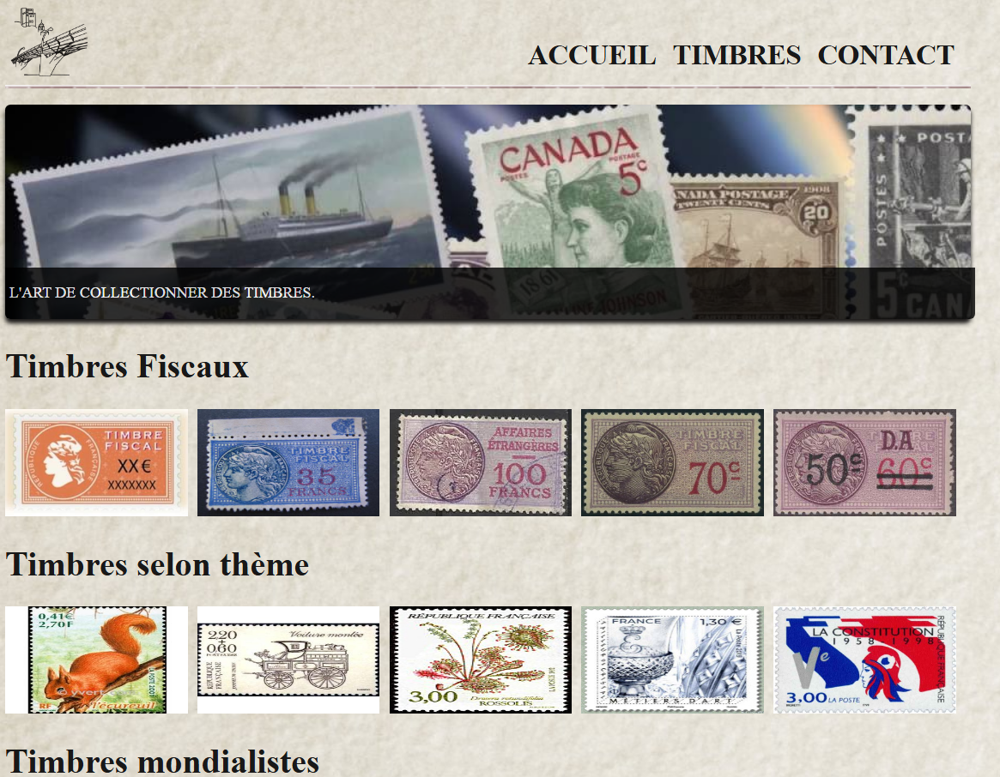

Bonjour,
Je m'appelle Anwar ZOUIOULA
Etudiant en BTS SIO option SLAM
Contact
A Propos
Je m'appelle Anwar
Anwar Zouioula, 19 ans, actuellement étudiant en BTS SIO option SLAM à H3 Hitema, Paris, je me forme en alternance au sein de Mk Tendos, une entreprise de télécommunications. Passionné par le développement et les technologies informatiques, j’allie théorie et pratique pour acquérir une expertise solide. À travers ce portfolio, je vous invite à découvrir mon parcours académique et professionnel, ainsi que les projets que j’ai réalisés. Vous y trouverez également mon CV et un aperçu de mes compétences. Bonne visite !
Compétences
Compétences Professionnel
Compétences acquises au cours de mes stages, à l'école et lors de projets personnels.

Ci-après, vous trouverez ma fiche de compétences, complétée tout au long de mon stage et de mon alternance, ainsi que mon rapport de stage effectué lors de ma première année. La fiche de compétences est disponible aux formats XLSX et PDF, et le rapport de stage est disponible en PDF.
Rapport de stage .pdf Tableau de synthèse .xlsx Tableau de synthèse .pdfProjets Personnels Encadrés

Projet "StampCollector"
StampCollector est un site web interactif dédié aux passionnés de philatélie, permettant d’explorer, organiser et partager des collections de timbres. Développé en HTML, CSS et JavaScript, il offre une interface fluide et intuitive pour une navigation optimisée. Le site permet de classer les timbres par pays, facilitant ainsi la gestion des collections.
Projet "Site de collections des timbres"
Collections des Timbres est un projet web permettant d’identifier et d’organiser les timbres ainsi que leurs collections.
StampCollector
Le site est développé en HTML, CSS et JavaScript, en utilisant VS Code comme éditeur.
Vous pouvez visiter le site en suivant ce lien :

Projet "Chat bot UI"
Chat bot UI est un site dédié à l'utilisation de solution rag couplé à chat GPT.
L'application est codé en javascript et html/css.
L'application utilise NodeJS pour le front end en React, et l'API de OpenIA d'Azrue.
Veille Technologique
L’intelligence artificielle dans les assistants vocaux
Les assistants vocaux comme Siri, Alexa et Google Assistant utilisent l’intelligence artificielle pour comprendre et répondre aux demandes des utilisateurs. Grâce au machine learning, ils s’améliorent avec le temps et peuvent exécuter des tâches comme envoyer des messages, donner la météo ou contrôler des objets connectés. Cette technologie continue d’évoluer pour rendre les interactions plus naturelles et efficaces.
Télécharger ma Veille Technologique
Contact
anwar132005@gmail.com
+33 6 02 54 04 65